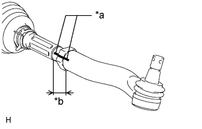
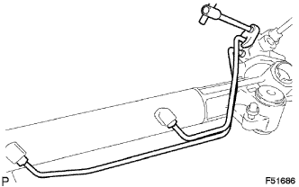
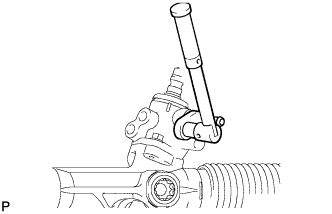
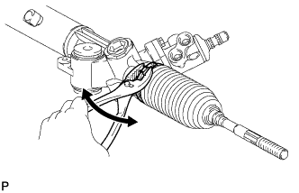
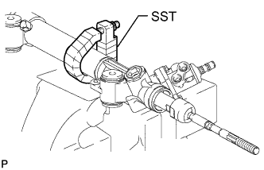
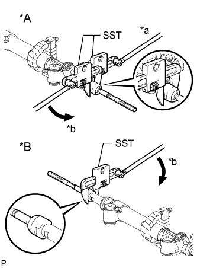

STEERING GEAR > DISASSEMBLY |
| 1. REMOVE TIE ROD END SUB-ASSEMBLY LH |
|  |
Put matchmarks on the tie rod end LH and steering rack end.
| *a | Matchmark |
| *b | Length A |
Measure length A and record the measurement.
Remove the tie rod end LH.
| 2. REMOVE TIE ROD END SUB-ASSEMBLY RH |
| 3. REMOVE TURN PRESSURE TUBE |
|  |
Using a union nut wrench, remove the turn pressure tube LH and RH.
| 4. REMOVE STEERING GEAR OUTLET RETURN TUBE |
|  |
Using a union nut wrench, remove the return tube from the steering gear.
| 5. REMOVE STEERING RACK BOOT CLIP LH |
Using pliers, remove the steering rack boot clip.
| 6. REMOVE STEERING RACK BOOT CLIP RH |
| 7. REMOVE STEERING RACK BOOT CLAMP LH |
|  |
Using pliers, remove the boot clamp as shown in the illustration.
| 8. REMOVE STEERING RACK BOOT CLAMP RH |
| 9. REMOVE NO. 2 STEERING RACK BOOT |
Remove the No. 2 steering rack boot.
| 10. REMOVE NO. 1 STEERING RACK BOOT |
Remove the No. 1 steering rack boot.
| 11. SECURE RACK AND PINION POWER STEERING GEAR ASSEMBLY |
|  |
Using SST, secure the steering gear assembly.
| 12. REMOVE STEERING RACK END SUB-ASSEMBLY |
|  |
Using SST, hold the steering rack (LH side).
| *A | LH Side |
| *B | RH Side |
| *a | Hold |
| *b | Turn |
Using SST, remove the steering rack end (LH side) from the steering rack.
Using SST, remove the steering rack end (RH side) from the steering rack.